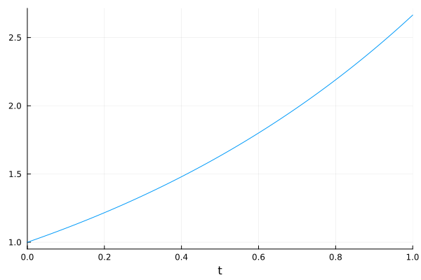
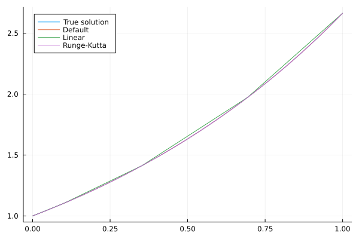
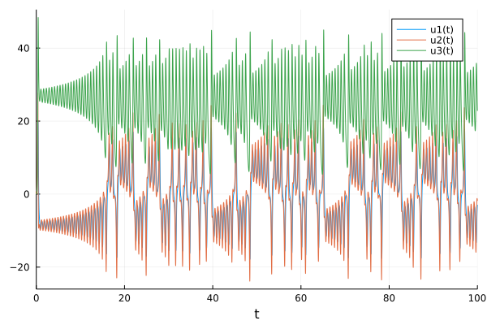
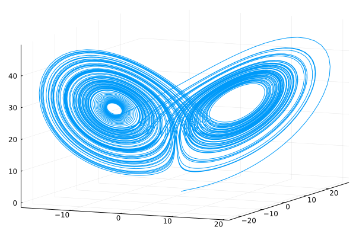
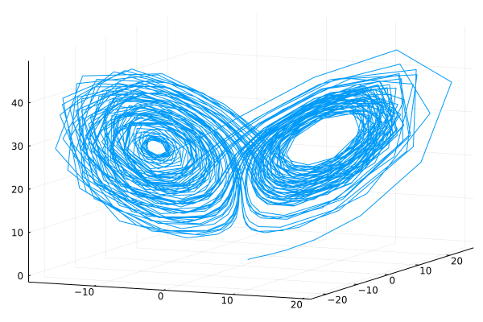
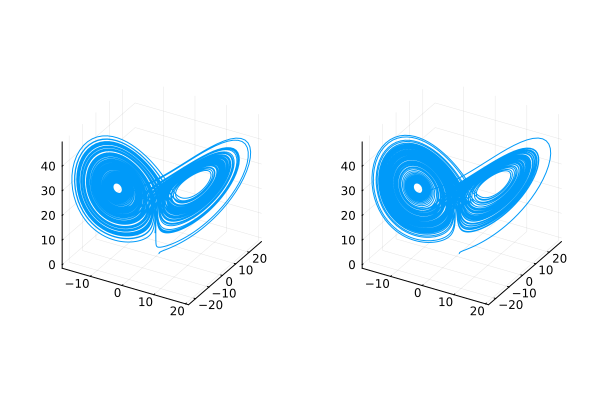

Julia package
To solve differential equations, we use the package DifferentialEquations, which consider ODEs in the form
\[\dot u(t) = f(t, u(t), p(t))\]
with the initial condition $u(t_0)= u_0$. While $u$ is the solution, $p$ describes external parameters.
Introduction
We start with the following simple problem:
\[\begin{aligned} \dot u(t) &= 0.98u, \\ u(0) &= 1. \end{aligned}\]
This equation has the closed-form solution $u(t) = e^{0.98t}$. To solve it by DifferentialEquations, we first need to create the problem prob by supplying the function $f$, the initial point $u_0$ and the time interval $[t_0,t_1]$ to the constructor ODEProblem.
using DifferentialEquations
f(u,p,t) = 0.98*u
u0 = 1.0
tspan = (0.0, 1.0)
prob = ODEProblem(f, u0, tspan)Then we use the solve function to solve the equation.
sol = solve(prob)retcode: Success
Interpolation: specialized 4th order "free" interpolation, specialized 2nd order "free" stiffness-aware interpolation
t: 5-element Vector{Float64}:
0.0
0.10042494449239292
0.35218603951893646
0.6934436028208104
1.0
u: 5-element Vector{Float64}:
1.0
1.1034222047865465
1.4121908848175448
1.9730384275622996
2.664456142481451The first line says that the solution was successful, which can be automatically checked by accessing the field sol.retcode. The second line specifies the interpolation method, and the following lines the solution. Even though the solution was evaluated at only five points, the interpolation allows plotting a smooth function.
using Plots
plot(sol; label="")
The sol structure can be used to evaluate the solution $u$.
sol(0.8)2.1902158127997695The following exercise shows how to specify the interpolation technique and compares the results.
When calling the solve function, we can specify the interpolation way. Solve the ODE with linear interpolation (dense=false) and the Runge-Kutta method of the fourth order (RK4()). Plot the results and compare them with the default and original solutions.
Solution:
To compute the additional solutions, we add the arguments as specified above.
sol2 = solve(prob, dense=false)
sol3 = solve(prob, RK4())We create a discretization ts of the time interval and then plot the four functions.
ts = range(tspan...; length = 100)
plot(ts, t->exp(0.98*t), label="True solution", legend=:topleft)
plot!(ts, t->sol(t), label="Default")
plot!(ts, t->sol2(t), label="Linear")
plot!(ts, t->sol3(t), label="Runge-Kutta")
We see that all solutions are the same except for the linear approximation.
Lorenz system
The Lorenz system is a prime example of the butterfly effect in the chaos theory. There, small changes in the initial conditions result in large changes in the solution. This effect was first described in 1961 during work on weather modelling.
The following equations describe the three-dimensional Lorenz system:
\[\begin{aligned} \frac{\partial x}{\partial t} &= \sigma (y - x), \\ \frac{\partial y}{\partial t} &= x (\rho - z) - y, \\ \frac{\partial z}{\partial t} &= x y - \beta z. \end{aligned}\]
We first define the right-hand side of the system.
function lorenz(u, p, t)
σ, ρ, β = p
x_t = σ*(u[2]-u[1])
y_t = u[1]*(ρ-u[3]) - u[2]
z_t = u[1]*u[2] - β*u[3]
return [x_t; y_t; z_t]
endThe parameters are saved in a tuple or array p. Since the right-hand side of the Lorenz system is a vector, we need to return a vector as well. Now, we compute the solution in the same way as before.
u0 = [1.0; 0.0; 0.0]
p = [10; 28; 8/3]
tspan = (0.0, 100.0)
prob = ODEProblem(lorenz, u0, tspan, p)
sol = solve(prob)We plot the solution:
plot(sol)
Since this is a two-dimensional graph of all coordinates, we need to specify that we want to plot a 3D graph.
plt1 = plot(sol, vars=(1,2,3), label="")┌ Warning: To maintain consistency with solution indexing, keyword argument vars will be removed in a future version. Please use keyword argument idxs instead.
│ caller = ip:0x0
└ @ Core :-1
We see the power of interpolation again. If we used linear interpolation, which amounts to connecting the points, we would obtain a much coarse graph.
plot(sol, vars=(1,2,3), denseplot=false; label="")┌ Warning: To maintain consistency with solution indexing, keyword argument vars will be removed in a future version. Please use keyword argument idxs instead.
│ caller = ip:0x0
└ @ Core :-1
This graph shows the strength of the DifferentialEquations package. With a small computational effort, it can compute a good solution. Note that the last plotting call is equivalent to:
traj = hcat(sol.u...)
plot(traj[1,:], traj[2,:], traj[3,:]; label="")In the introduction, we mentioned chaos theory. We will elaborate on this in the following exercise.
Use the nextfloat function to perturb the first parameter of p by the smallest possible value. Then solve the Lorenz system again and compare the results by plotting the two trajectories next to each other.
Solution:
We start with the smallest possible perturbation of the initial value.
p0 = (nextfloat(p[1]), p[2:end]...)(10.000000000000002, 28.0, 2.6666666666666665)Then we plot the graphs as before
prob0 = ODEProblem(lorenz, u0, tspan, p0)
sol0 = solve(prob0)
plt0 = plot(sol0, vars=(1,2,3), label="")
plot(plt1, plt0; layout=(1,2))┌ Warning: To maintain consistency with solution indexing, keyword argument vars will be removed in a future version. Please use keyword argument idxs instead.
│ caller = ip:0x0
└ @ Core :-1
The solutions look different. Comparing the terminal states of both solutions
hcat(sol(tspan[2]), sol0(tspan[2]))3×2 Matrix{Float64}:
-2.94542 -0.628467
-1.84189 -3.10333
22.7963 23.3035shows that they are different by a large margin. This raises a natural question.
Can we trust the solutions? Why?
Solution:
Unfortunately, we cannot. Numerical methods always introduce some errors by
- Rounding errors due to representing real numbers in machine precision.
- Discretization errors for continuous systems when the finite difference method approximates the derivative.
However, if the system itself is unstable and an extremely small perturbation results in big differences in solutions, the numerical method even enhances these errors. The solution could be trusted on some small interval but not after it.
The following section shows a situation where we try to mitigate this possible effect by using mathematical formulas to compute the exact solution as long as possible. This aproach delays the necessary discretization and may bring better stability.